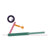

Sphinx Pose
Salamba Bhujangasana
How to
Lie face down and prop up on the forearms, elbows under the shoulders, letting the chest lift gently while the hips and legs stay grounded.
Benefits
- A gentle entry point to backbends
- Strengthens the lower back gradually
- Stretches the chest and abdomen
Practice
Hold for 1-3 minutes, keeping the shoulders drawing down away from the ears.

Get the Asanas appFree, no ads, works offline
Google Play
General information, not medical advice. If you have a health condition or pain, talk to a doctor or qualified teacher first.